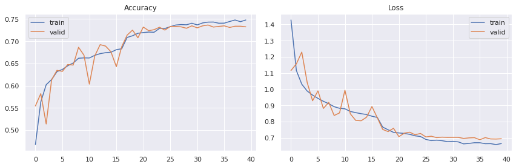
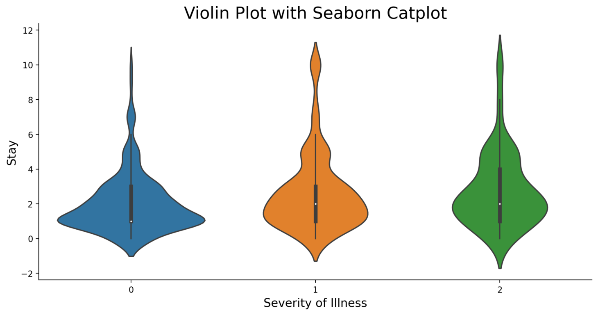

Projects
My portfolio includes seven projects on different topics focusing on Machine Learning, Computer Vision, Data Analysis, Statistics, ETL, and Cloud Deployment (AWS). Projects can be viewed by category below.
This page features projects from following topics:
- Song Playlist Generator System Based on Facial Expression and Song Mood
- Computer Vision
- Data Analysis
- Statistical Analysis
- Extract, Transform, and Load
Machine Learning
Song Playlist Generator System Based on Facial Expression and Song Mood
Highlights
- conducted research to enhance the user experience in music streaming by developing a system for generating personalized playlists based on emotion detection and user song preferences.
- successfully integrated state-of-the-art technologies, including Convolutional Neural Networks (CNN) for emotion detection and Artificial Neural Networks (ANN) for song classification, showcasing my technical prowess.
- achieved an impressive 84% accuracy in emotion detection using the FER-13 dataset, which contains approximately 14,000 facial images and an 82% accuracy in song classification. Improved performance by 4% with 0.83 F1-score
Tags: Artificial Intelligence, Machine Learning, Convolutional Neural Network (CNN) , Artificial Neural Network (ANN) , Emotion Detection , Song mood classification, Song Recommendation
Summary
1. Developing Model For Facial Emotion Detection:
First, I developed a model for facial emotion detection, which involved two crucial steps:
-
Step 1: I utilized a Haar Cascade feature-based classifier to detect faces in images. This initial step allowed me to locate and isolate facial regions accurately.
-
Step 2: I employed a Convolutional Neural Network (CNN) for emotion detection. My CNN model architecture comprised six convolutional layers followed by three dense layers. These convolutional layers had varying feature sizes, and the dense layers included different numbers of nodes.
For training this model, I utilized the FER-13 dataset, which contains data for four facial expressions: Angry, Happy, Sad, and Surprised.
The outcome of my efforts was an 83% accuracy in facial emotion recognition, with a loss of 0.4532.
2. Collecting User Past History Using APIs:
In the second part of the project, I collected user data and their historical music listening records using Application Programming Interfaces (APIs). I set up connections with these APIs, likely from music streaming platforms or databases, to gather user-specific information
3. Song Mood Classification:
Moving on to the third component, I designed a system for classifying the mood of songs. The process involved:
- Creating a Sequential Model for song mood classification, following common deep learning practices.
- Utilizing the KerasClassifier to encapsulate my Sequential Model as a function.
- Selecting ten relevant attributes, including song features like Length, Danceability, Acousticness, Energy, Instrumentalness, Liveness, Valence, Loudness, Speechiness, and Tempo, which I found useful for mood prediction.
- Designing a Sequential Neural Network with four layers, each with various neuron configurations.
The model I created achieved an accuracy of 83% for song mood classification, considering four distinct mood classes: Calm Song, Happy Song, Energetic Song, and Sad Song. The dataset I used for this task was sourced from Spotify and contained over 800 songs with diverse attributes.
In summary, I divided the project into well-defined components. In the first part, I focused on facial emotion detection using a CNN, and I achieved an 83% accuracy. The second part involved collecting user data through APIs, and the third part concentrated on song mood classification with a deep learning approach, also achieving an 83% accuracy. These results demonstrate the effectiveness of my machine learning techniques in providing personalized music recommendations based on user emotions and song attributes.
Computer Vision
Image Captioning

Highlights
- Developed image captioning using several state-of-the-art CNN architectures using TensorFlow.
- The architectures include ResNet50, InceptionResNetv2, and DenseNet201
- Achieved highest accuracy of 87% with ResNet50 architecture.
Tags: Python, Computer Vision, TensorFlow, Deep Learning, Convolutional Neural Networks
Summary
I first preprocessed the textual data by converting sentences to lowercase, removing special characters and numbers, and adding starting and ending tags to indicate the beginning and end of a sentence. I then used transfer learning to extract features from images using the ResNet50 and DenseNet201 convolutional neural networks. These features were combined with the preprocessed textual data and fed into a recurrent neural network model consisting of an LSTM layer and a fully connected output layer with a softmax activation function.
The hyperparameters of the model, such as the embedding size, LSTM units, dense units, learning rate, and batch size, are tuned using Optuna, a hyperparameter optimization framework.
The model was trained using the categorical cross-entropy loss function and RMSprop optimizer for 200 epochs. The final model achieved a validation accuracy of around 0.87, which indicates that the model is able to generate captions that are somewhat similar to the ground truth captions for the input images
Below is loss and accuracy for ResNet50 Model

Data Analysis
Sales Data Analysis

Highlights
- Developing a dataset of historical transaction data containing features such as customer data, transaction history, product details, and payment method.
- Preprocessing and cleaning the dataset to prepare it for machine learning model training.
- Selecting relevant features and developing a model that can accurately predict the payment value for a given transaction or product.
- Evaluating the performance of the model using metrics such as MSE, MAE and R2-Score.
Tags: Python, SQL, R, Data Analysis, Predictive Modeling,
Summary
Worldcup Cricket Data Analysis using PowerBI Dashboard

Highlights
- This project was performed as part of Google Data Analytics Professional Certificate
- Performed real-world data analysis in R for a fictional company called Cyclistic.
Tags: Power BI, SQL, Data Analysis, Web Scrapping
Summary
Hypothetical Scenario:
I am a junior data analyst working in the marketing analyst team at Cyclistic, a bike-share company in Chicago. The director of marketing believes the company’s future success depends on maximizing the number of annual memberships. Therefore, our team wants to understand how casual riders and annual members use Cyclistic bikes differently. From these insights, our team will design a new marketing strategy to convert casual riders into annual members. But first, Cyclistic executives must approve our recommendations, so they must be backed up with compelling data insights and professional data visualizations.
Statistical Analysis
Healthcare Institution Situation Analysis using R
Highlights
- Built a binary classification model using chest X-Ray images and VGG-16 convolutional neural network architecture pre-trained on ImageNet.
- New fully-connected layer was added to the pre-trained network to classify images as either normal or COVID-affected.
- Model was trained and achieved an accuracy of 93%.
Tags: Python, Computer Vision, TensorFlow, Deep Learning, Convolutional Neural Networks
Summary
In recent years, deep learning has shown promising results in medical image analysis, including detecting COVID-19 from chest X-rays. One popular approach is to use pre-trained convolutional neural network (CNN) models, such as VGG-16, ResNet, or DenseNet, and fine-tune them on COVID-19 chest X-ray datasets. The fine-tuning process involves removing the original classification layer and adding a new one to adapt the model to the specific COVID-19 detection task.
Besides using pre-trained models, researchers have also developed specialized architectures for COVID-19 detection. For example, COVID-Net is a CNN model specifically designed for COVID-19 detection from chest X-rays. COVID-Net uses a series of convolutional and pooling layers followed by several fully-connected layers to classify chest X-rays as normal, pneumonia, or COVID-19.
The goal of the project is to develop a machine learning model that can accurately and quickly detect COVID-19 infection from chest X-ray images. By achieving an accuracy of 93%, the model shows promise as a potential tool for COVID-19 screening and diagnosis.
Extract, Transform, and Load (ETL)
Movies Recommendation System
Highlights
Tags: R, NoSQL (MongoDB), Docker, Jenkins, AWS